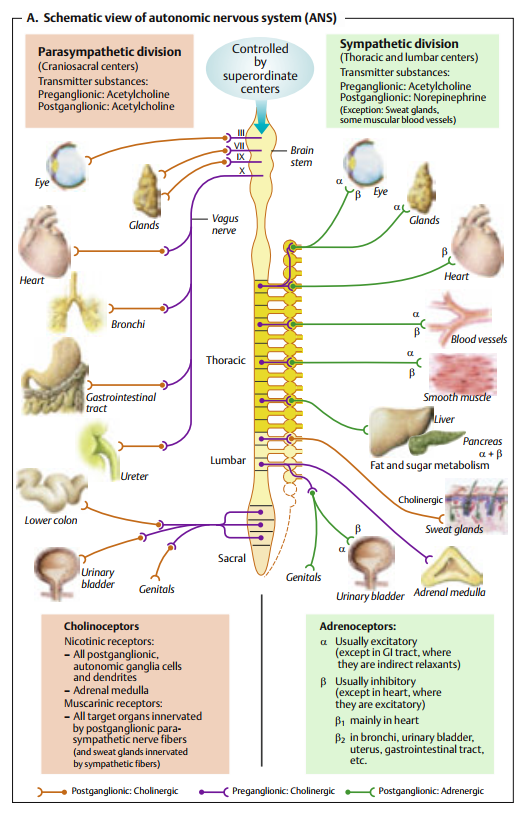

Sinh lý Hệ thần kinh tự chủ (Autonomic Nervous System - ANS)
Mạng lưới điều khiển tự động các hoạt động sống không theo ý muốn, duy trì sự hằng định nội môi của cơ thể.
Phần I: Khái niệm & Cấu trúc cơ bản của ANS
Hệ thần kinh tự chủ (Autonomic Nervous System - ANS) hay hệ thần kinh thực vật là phần thần kinh bảo đảm sự chi phối các cơ quan nội tạng, cơ trơn, cơ tim và các tuyến. Chức năng cốt lõi của ANS là duy trì sự hằng định nội môi (homeostasis) trước những biến động liên tục của môi trường sống xung quanh. Các phản ứng của hệ này thường xảy ra một cách tự động, không theo ý muốn chủ quan của con người.
Về mặt cấu trúc, cung phản xạ ly tâm ngoại biên của hệ thần kinh tự chủ bao gồm chuỗi hai neuron nối tiếp tiếp hợp nhau tại các hạch tự chủ:
- Neuron trước hạch (Preganglionic neuron): Có thân nằm trong hệ thần kinh trung ương (não bộ hoặc tủy sống). Sợi trục của nó là sợi nhóm B, có bao myelin mỏng, dẫn truyền tín hiệu tương đối nhanh đến hạch tự chủ ngoại biên.
- Neuron sau hạch (Postganglionic neuron): Có thân neuron nằm tại các hạch tự chủ ngoại biên. Sợi trục của nó là sợi nhóm C, không có bao myelin, đi đến chi phối trực tiếp tại các cơ quan đáp ứng (mạch máu, cơ tim, cơ trơn tạng, các tuyến).

Phần II: Đặc điểm Hệ Giao cảm & Đối giao cảm
Hệ thần kinh tự chủ được phân chia về mặt giải phẫu và chức năng thành hai hệ đối lập nhau: Hệ giao cảm (Sympathetic) và Hệ đối giao cảm (Parasympathetic).
- Trung khu: Sừng bên chất xám tủy sống, kéo dài từ đốt tủy ngực 1 (T1) đến thắt lưng 2 hoặc 3 (L2-L3). (Hệ ngực - thắt lưng).
- Hạch tự chủ: Chuỗi hạch cạnh sống (hai chuỗi dọc cột sống) và hạch trước cột sống (hạch tạng, hạch mạc treo tràng trên/dưới).
- Độ dài sợi: Sợi trước hạch ngắn (do hạch nằm gần tủy), sợi sau hạch dài (đi từ hạch đến cơ quan đích).
- Trung khu: Vùng sọ (nhân vận động của dây III, VII, IX, X ở thân não) và vùng tủy cùng (đốt tủy S2, S3, S4). (Hệ sọ - cùng).
- Hạch tự chủ: Nằm ở rất gần hoặc nằm ngay bên trong cấu trúc thành của các cơ quan đích (hạch mi, hạch tai, hạch dưới hàm, đám rối Auerbach/Meissner).
- Độ dài sợi: Sợi trước hạch rất dài, sợi sau hạch rất ngắn.
Tuyến tủy thượng thận về mặt phôi thai học và sinh lý học thực chất là một hạch giao cảm biến đổi. Tại đây, các neuron sau hạch đã thoái hóa mất đi sợi trục và biệt hóa thành các tế bào tiết tuyến. Khi bị kích thích bởi sợi trước hạch giao cảm, tế bào tủy thượng thận giải phóng trực tiếp các hormone Epinephrine (80%) và Norepinephrine (20%) vào máu, tạo ra đáp ứng giao cảm khuếch tán và kéo dài toàn thân.
Phần III: Chất dẫn truyền thần kinh & Hệ thống Thụ thể (Receptors)
Tín hiệu luồng xung động thần kinh qua khe synapse tại các hạch tự chủ và tại các đầu tận cùng cơ quan đích được thực hiện nhờ các chất dẫn truyền thần kinh (neurotransmitters) gắn vào các thụ thể (receptors) đặc hiệu:
-
Acetylcholine (ACh): Chất truyền tin hóa học được phóng thích từ:
- Toàn bộ các sợi trước hạch (của cả hai phân hệ Giao cảm và Đối giao cảm).
- Toàn bộ các sợi sau hạch của hệ Đối giao cảm.
- Một số sợi sau hạch giao cảm đặc biệt: chi phối tuyến mồ hôi và các mạch máu cơ xương (sợi cholinergic giao cảm).
- Norepinephrine (NE) & Epinephrine (Epi): Norepinephrine được phóng thích từ hầu hết sợi sau hạch giao cảm. Cả NE và Epi do tủy thượng thận tiết ra sẽ tác động lên các thụ thể Adrenergic tại cơ quan đích.
Bảng tổng hợp Thụ thể của Hệ thần kinh tự chủ
| Loại Thụ Thể | Cơ chế Tín hiệu nội bào / Kênh | Vị trí phân bố chủ yếu | Tác dụng sinh lý chính |
|---|---|---|---|
| Nicotinic (NN, NM) Cholinergic |
Kênh ion cổng phối tử (Mở kênh Na+/K+) | Màng sau synapse tại hạch giao cảm & đối giao cảm; tấm vận động thần kinh - cơ | Khử cực tế bào sau hạch, kích hoạt luồng xung động thần kinh ly tâm tiếp theo |
| Muscarinic (M1, M2, M3) Cholinergic |
Bắt cặp Protein G (GPCR) - M1, M3: Gq (IP3/DAG/Ca2+) - M2: Gi (Giảm cAMP) |
Cơ quan đích của hệ đối giao cảm (M2 ở tim; M3 ở cơ trơn tạng và các tuyến tiết) | - Tim (M2): Giảm nhịp tim, giảm dẫn truyền cơ tim. - Cơ trơn & tuyến (M3): Co phế quản, tăng nhu động tiêu hóa, co bóp bàng quang, tăng bài tiết dịch. |
| Alpha-1 (α1) Adrenergic |
Gq-protein (Tăng IP3/DAG, giải phóng Ca2+ nội bào) | Cơ trơn mạch máu ngoại biên (da, tạng), cơ tia mống mắt, cơ vòng tiêu hóa & tiết niệu | Co cơ trơn mạch máu (gây tăng huyết áp), co cơ tia mống mắt (gây giãn đồng tử), co cơ vòng. |
| Alpha-2 (α2) Adrenergic |
Gi-protein (Ức chế Adenylate Cyclase, giảm cAMP) | Màng trước synapse (đầu tận cùng sợi thần kinh giao cảm) | Điều hòa ngược âm tính (Negative feedback loop) ức chế phóng thích thêm Norepinephrine ngoại biên. |
| Beta-1 (β1) Adrenergic |
Gs-protein (Kích hoạt Adenylate Cyclase, tăng cAMP) | Cơ tim (nút xoang, nút nhĩ thất, cơ nhĩ & thất), tế bào cận cầu thận của thận | Tăng nhịp tim, tăng lực co bóp cơ tim, tăng tốc độ dẫn truyền nhĩ thất; kích thích giải phóng Renin để tăng HA. |
| Beta-2 (β2) Adrenergic |
Gs-protein (Kích hoạt Adenylate Cyclase, tăng cAMP) | Cơ trơn phế quản, cơ trơn mạch vành, cơ trơn mạch máu cơ xương, cơ trơn thành ống tiêu hóa & tử cung | Giãn cơ trơn phế quản (giúp dễ thở), giãn mạch vành/mạch cơ xương, giãn cơ trơn tạng rỗng và cơ tử cung (giảm co). |
| Beta-3 (β3) Adrenergic |
Gs-protein (Kích hoạt Adenylate Cyclase, tăng cAMP) | Mô mỡ (lipocytes) | Kích thích tiêu hủy lipid (lipolysis), giải phóng các acid béo tự do vào dòng tuần hoàn tạo năng lượng. |
Phần IV: Chức năng sinh lý trên các Cơ quan Đích
Hệ giao cảm và hệ đối giao cảm thường hoạt động phối hợp nhịp nhàng nhưng đối lập nhau trên cơ quan đích, nhằm duy trì trương lực tự chủ cơ bản của cơ thể tùy thuộc vào các tình huống sinh hoạt cụ thể.
| Cơ quan đích | Tác dụng của Hệ Giao Cảm (Fight or Flight) | Tác dụng của Hệ Đối Giao Cảm (Rest and Digest) |
|---|---|---|
| Mắt | Co cơ tia mống mắt (Thụ thể α1) → Giãn đồng tử (nhìn rõ hơn trong bóng tối hoặc khi nguy hiểm) | Co cơ vòng mống mắt (Thụ thể M3) → Co đồng tử; co cơ thể mi (Thụ thể M3) → điều tiết nhìn gần |
| Tim | Tác động lên thụ thể β1 → Tăng nhịp tim, tăng sức co bóp, tăng tốc độ dẫn truyền nhĩ thất. | Tác động lên thụ thể M2 → Giảm nhịp tim, giảm sức co bóp tâm nhĩ, giảm tốc độ dẫn truyền nhĩ thất. |
| Phổi (Đường thở) | Tác động lên thụ thể β2 → Giãn cơ trơn phế quản (tối đa hóa lượng khí lưu thông phổi) | Tác động lên thụ thể M3 → Co thắt phế quản, kích thích bài tiết các tuyến dịch phế quản. |
| Hệ Tiêu hóa | Giảm nhu động và trương lực cơ trơn thành ruột (Thụ thể β2, α2); co các cơ vòng tiêu hóa (Thụ thể α1); giảm tiết dịch tạng. | Tăng nhu động và trương lực cơ trơn thành ruột (Thụ thể M3); giãn các cơ vòng tiêu hóa; kích thích bài tiết lượng lớn dịch tiêu hóa. |
| Hệ Tiết niệu | Giãn cơ bàng quang (cơ detrusor - Thụ thể β2); co cơ vòng trong niệu đạo (Thụ thể α1) → Ức chế tiểu tiện | Co cơ bàng quang (cơ detrusor - Thụ thể M3); giãn cơ vòng trong niệu đạo → Kích thích tiểu tiện |
| Chuyển hóa & Glucose | Kích thích phân giải glycogen gan và ly giải mô mỡ tạo glucose tự do đưa vào máu (Thụ thể β2, β3) → tăng năng lượng tức thời. | Hỗ trợ quá trình tích trữ năng lượng, tổng hợp glycogen tại gan (thông qua phối hợp nội tiết). |
Một số cơ quan trong cơ thể **chỉ nhận duy nhất sợi thần kinh chi phối từ hệ Giao cảm** mà không có
đường đối giao cảm đối trọng, bao gồm:
• Tuyến mồ hôi: Kích thích bài tiết mồ hôi (sử dụng sợi Cholinergic giao cảm tiết
Acetylcholine gắn thụ thể Muscarinic).
• Cơ dựng lông: Co cơ làm dựng lông cơ thể.
• Tuyến tủy thượng thận: Kích thích tiết Epinephrine và Norepinephrine vào máu.
• Phần lớn các mạch máu hệ thống: Duy trì trương lực co mạch liên tục nhờ kích
thích nhẹ thường trực lên thụ thể α1. Khi muốn giãn mạch, cơ thể chỉ cần giảm tần số
xung giao cảm đi xuống.
Phần V: Sự điều khiển tự động (Các phản xạ & Trung tâm điều hòa)
Hoạt động của hệ thần kinh tự chủ diễn ra hoàn toàn tự động nhưng chịu sự điều hòa, phối hợp nhịp nhàng thông qua các cung phản xạ sinh mạng và các trung khu chỉ huy cấp cao trong hệ thần kinh trung ương:
1. Các phản xạ tự động điển hình
Hai phản xạ tiêu biểu nhất thể hiện rõ tính chất điều khiển ngược âm tính (negative feedback) của hệ thần kinh tự chủ bao gồm:
Cơ chế Phản xạ áp suất (Baroreceptor Reflex) điều hòa huyết áp:
-
Bước 1: Tăng huyết áp hệ thống Huyết áp động mạch tăng đột ngột làm căng giãn thành xoang động mạch cảnh và quai động mạch chủ.
-
Bước 2: Phát luồng xung hướng tâm Các thụ thể áp suất (Baroreceptors) bị kích hoạt phát các luồng tín hiệu theo dây thần kinh sọ IX (dây thiệt hầu) và X (dây phế vị) truyền về não.
-
Bước 3: Tích hợp tại Hành não Tín hiệu hướng tâm đi vào nhân bó đơn độc (NTS - Nucleus Tractus Solitarius) tại hành não. NTS xử lý thông tin để kích hoạt trung khu ức chế tim và ức chế trung khu vận mạch.
-
Bước 4: Điều chỉnh luồng xung ly tâm Tăng cường độ xung động Đối giao cảm (qua dây X) đến tim; đồng thời ức chế luồng xung động Giao cảm đi xuống tủy sống và mạch máu ngoại biên.
-
Bước 5: Đáp ứng hạ áp Kết quả làm tim đập chậm lại, giảm lực co bóp cơ tim, và gây giãn rộng các mạch máu ngoại biên → Đưa chỉ số huyết áp trở lại mức bình thường.
Các phản xạ tiêu hóa và tiết niệu:
Khi bàng quang căng đầy nước tiểu hoặc trực tràng chứa nhiều phân, các cơ thụ thể áp lực tại thành cơ quan sẽ gửi xung thần kinh hướng tâm về chất xám tủy cùng (S2-S4). Tại đây, phản xạ đối giao cảm được tích hợp để phát luồng ly tâm gây co bóp cơ detrusor bàng quang hoặc cơ thành trực tràng, đồng thời mở cơ thắt để tống phân/nước tiểu ra ngoài.
2. Các trung tâm điều hòa tự chủ ở não bộ
Các trung tâm thần kinh trung ương kiểm soát hoạt động của ANS được phân cấp rõ rệt:
-
Vùng hạ đồi (Hypothalamus): Là trung khu điều hòa cao cấp nhất của hệ
thần kinh tự chủ.
• Kích thích vùng sau và vùng bên của hạ đồi gây ra các phản ứng mang tính giao cảm khuếch tán (tăng nhịp tim, huyết áp, giận dữ, sợ hãi).
• Kích thích vùng trước (vùng trước thị) kích hoạt các đáp ứng đối giao cảm (hạ áp, làm chậm nhịp tim).
• Vùng hạ đồi cũng liên kết chặt chẽ hệ TKTC với hệ nội tiết và các trung tâm hành vi để điều hòa nhiệt độ, cân bằng nước, đói nghèo. - Thân não (Hành não và Cầu não): Chứa các trung tâm phản xạ trực tiếp duy trì sự sống bao gồm: trung tâm vận mạch (vasomotor center), trung tâm ức chế tim, và trung tâm hô hấp.
Tài liệu tham khảo
- Mai PT, Đặng HAT, Lê QT, Vũ TTQ, Bùi DK. Sinh lý học y khoa. Nhà xuất bản Đại học Quốc gia Thành phố Hồ Chí Minh; 2024.
- Koeppen BM, Stanton BA. Berne and Levy Physiology. 8th ed. Elsevier; 2024.
- Barrett KE, Barman SM, Boitano S, Brooks HL. Ganong's Review of Medical Physiology. 24th ed. McGraw-Hill Medical; 2012.
- Silbernagl S, Despopoulos A. Color Atlas of Physiology. 6th ed. Thieme; 2009.
- Mai PT. Sinh lý THẦN KINH YDS 2025 [Video]. Bs. Linh O'la Scar; 2025.